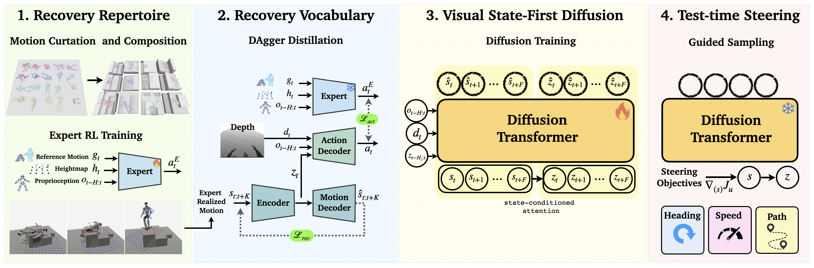

Perceptive humanoid fall recovery
Test-Time Motion Steering for Perceptive Humanoid Fall Recovery
* Equal contribution
Generate different ways to recover, adapt to the surroundings, and steer the motion at test time.
Why the recovery motion matters
Getting up is only part of the problem.
An obstacle changes which recovery motions are useful. These examples show collision without visual awareness, adaptation with depth observations, and a guided recovery toward the unobstructed side.
How it works
RISE: Perceptive Recovery via Intent Steering
- Observations
- Future body states
- Motion latents
- Motor actions
Steer the predicted body states, then generate motion latents and execute with feedback.

Build a recovery repertoire
Match compatible frames across recorded motions to compose alternative recoveries, then coarsely align them to terrain. A teacher learns to execute these references.
Learn a motion vocabulary
Teacher supervision trains a motion vocabulary and a feedback decoder that turns motion latents into actions using proprioception and egocentric depth.
Steer intent, then generate motion
A visual planner learns from the decoder’s realized motions. Task costs steer predicted body states, which then condition motion-latent generation.
Data curation & teacher training
From motion references to physical recoveries.
Frame-level matching connects recorded motions into variable-length recovery segments. These references are coarsely aligned to terrain, then a teacher learns to realize them in simulation. The teacher’s recoveries train the motion vocabulary, and the decoder’s own executions supply the data for the visual planner.
Multimodal recovery
A starting pose can lead to different recoveries.
Three unguided recoveries from supine (face-up) starts illustrate different ways to get up.
Terrain awareness
Recover with the surroundings in view.
Staggered steps change the support available during recovery. Onboard depth observations condition the motion as the robot gets up.
Test-time steering
Guide how the robot recovers.
Task costs steer predicted motion intent without retraining. Real-world demonstrations illustrate directional and route steering on flat ground and around raised terrain.
Flat ground
Raised terrain
Simulation
Different objectives, different recoveries.
Guide the recovery path, heading, or rise speed. Rise timing illustrates the effect of speed steering.
BibTeX
@misc{azulay2026rise,
title = {Test-Time Motion Steering for Perceptive Humanoid Fall Recovery},
author = {Osher Azulay and Cheng-Lin Hsieh and Stella X. Yu},
year = {2026},
eprint = {2610.30061},
archivePrefix = {arXiv},
primaryClass = {cs.RO},
url = {https://arxiv.org/abs/2610.30061}
}